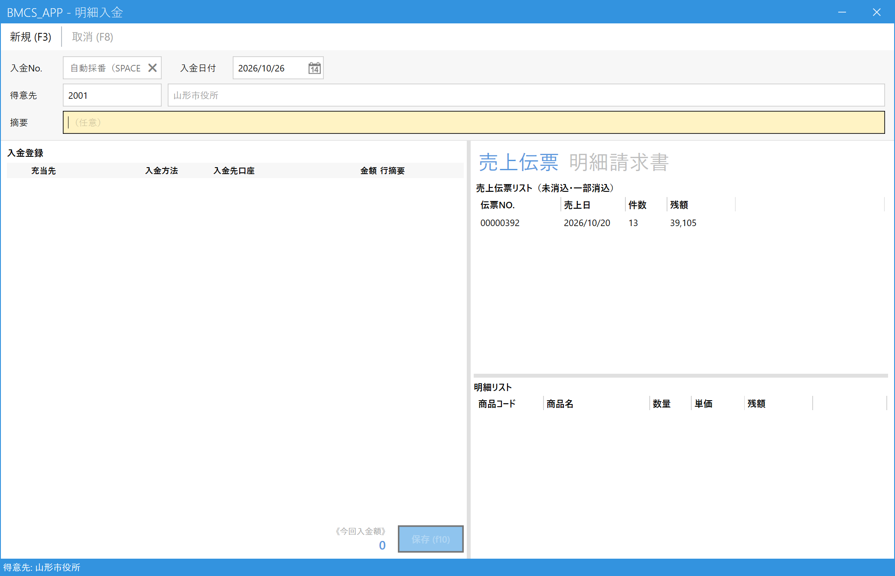
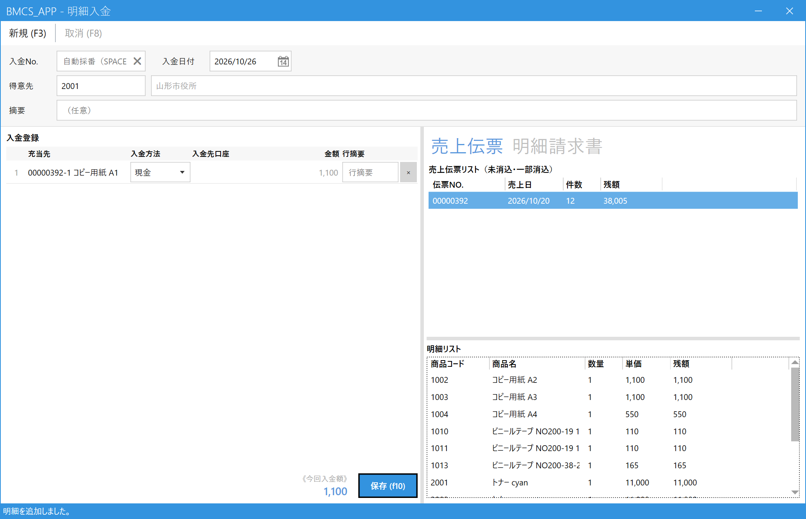

Register a Receipt for Per-Transaction Customers (Itemized Receipt)
Use this when you receive a payment from a per-transaction customer such as a government office or school.
Unlike closing-cycle customers, whose payments are applied automatically to the oldest billings first, here you specify which sale (or which invoice) the payment is for.
1.Choose the customer and find what the payment is for
From the main menu, open Itemized Receipt (明細入金) under Receipts (入金). Enter the code in the Customer (得意先) field and press Enter (press Space to search). On the right, the customer's sales slips that have not been paid yet appear.

- Receipt Date (入金日付): The day you received the money.
- Customer (得意先): The customer who paid.
- Tabs: "Sales Slips (売上伝票)" = specify sales lines to apply the payment to / "Itemized Invoices (明細請求書)" = specify a whole issued invoice to apply the payment to.
- Sales Slip List (売上伝票リスト): Slips that have not been paid (or have been only partly paid). The number of slips and the remaining amount (残額) are shown.
- Detail List (明細リスト): The lines of the slip selected above. Choose what the payment is for from here.
2.Choose what the payment is for
On the Sales Slips (売上伝票) tab, first select a slip. Its lines appear in the detail list below. Select the line that was paid and press Enter (or double-click). The line is added to the receipt list on the left (入金登録), one line at a time.

- Select (click) a slip.
- Press Enter on the line that was paid. The line you added disappears from the detail list.
- Receipt Registration (入金登録): The lines you added. The "Applied To (充当先)" column shows the slip number and the line / product name. The amount is filled in automatically (it is the full remaining amount of that line, and you cannot change it by hand).
- Payment Method (入金方法): Choose cash, bank transfer, and so on (for a bank transfer, also choose the deposit account). Bill (手形) cannot be chosen.
- Total Receipt Amount (今回入金額): The total of the lines you added. Check that it matches the amount you received.
- Save (保存) (F10).
If you add a line by mistake, remove it with the × on that line.
When you apply the payment to an invoice
If you have already issued an Itemized Invoice (明細請求書), switch to the Itemized Invoices (明細請求書) tab, select the invoice that was paid, and press Enter. One whole invoice is added as one line.
3.Save
When you press Save (保存) (F10), a Receipt No. is assigned and the payment is registered. The sales you specified become "reconciled (消込済み)" (when the full amount was paid).
4.Common tasks
| What you want to do | How |
|---|---|
| View or correct a registered payment | Enter the number in the Receipt No. (入金No.) field and press Enter, or press Space and pick it from the list. Make your corrections and save. |
| Cancel a payment | Call up the payment and press Cancel (取消) (F8) on the toolbar. A payment in a month for which Monthly Closing is done cannot be canceled until you release that Monthly Closing. |
| Start over from the beginning | Press New (新規) (F3). |